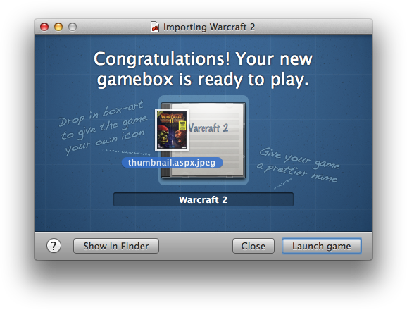
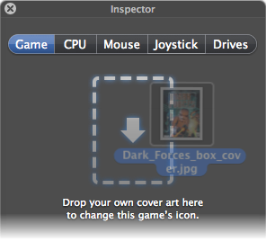

Decorating your games
Nostalgia doesn’t have to stop at playing your games. Why not make your collection into a shrine to your misspent youth?
Making purty cover-art icons

Boxer can turn game cover scans (or any image you like) into high-resolution Finder icons for your games.
-
For new games:
Import the game and drop your image
onto the game icon once it’s finished.

-
For existing games:
While playing, open the Game Inspector and drop your image onto the dropzone.

If you drop an opaque image (like a JPEG), then Boxer will apply a shiny box effect to the icon.
If you drop an image with transparency data (like a 32-bit PNG), then Boxer will use the image as-is.
Where can I find cover art to use?
- Mobygames has a very comprehensive selection, though images are watermarked.
- Abandonia has box scans for much of their collection.
- Wikipedia has retouched and watermark-free box images for many games.
Adding documentation to a game

The Help menu lists the documentation files inside the gamebox you’re playing. Click a file to open it in the appropriate viewer.
Normally this list shows all text files, PDFs and images inside the gamebox. To customise it:
- Browse the gamebox contents in Finder.
- Create a new folder inside the gamebox named Documentation.
- Fill it with the documentation files you want.
When there’s a Documentation folder inside the gamebox, the Help list will show everything in that folder and nothing else.
Where can I find manuals?
- ReplacementDocs has good-quality PDF scans of game manuals, maps and other documentation.
- Games purchased from GOG.com have complete PDF manuals for download separately.